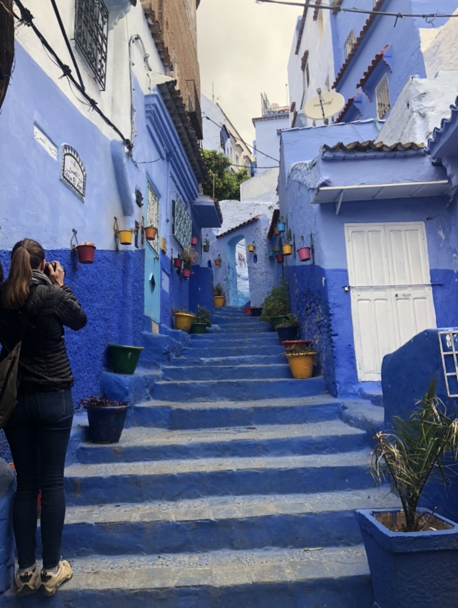

Places where riding a camel over dunes while the sun shimmers dramatically on the horizon is not an unusual thing. Where tagines come spiked with saffron and argan, carpet merchants haggle in the bazaars and Berber tribesmen herd goats on the slopes of the High Atlas Mountains.
Between tradition and modernity, Marrakech is the promise of unequalled sensations. Strolling the Jemaa El-Fna square and the souks with their shimmering colours and oriental smells, the red city offers you a complete change of scenery. Horse-drawn carriage rides, sunny terraces, travelling artists and other day and night activities will give a tates of wishful comeback.
My recommendation:
1. HEFCHAOUEN, THE BLUE DIAMOND
Built on a mountainside, Chefchaouen is a city with a special vibes. It unique charm gives an impression of unreality. With its blue-rinsed houses, the whole city seems to be bathed in azure. You walk around as if you were in a dream.
More than just an ornament, the beautiful Chefchaouen brims with attractions. Its heritage is rich. The inescapable Medina with its famous narrow winding alleys, is an opportunity to mingle with the local population, and to smell and taste delights: from freshly baked bread, to skillfully prepared tagines. There is also the Kasbah which stands in the middle of the old quarter: its lush gardens, located in the center of the city, are a haven of freshness. Its museum which is home to a collection of old weapons, some photos of the city, and textiles, is a must-see.
Boasting its unique geographical position, Chefchaouen is a paradise for walkers. The paths of the surrounding mountains offer pleasant hiking activities. You’ll explore a new side of Morocco, that of the Rif mountain range, as you stroll them.
Make the most of your stay in the picture perfect Blue city !
2. FEZ
Fez has a special atmosphere. This 13th-century city is an imperial city of long-lasting multicultural history, that reserves unexpected surprises for its visitors.
Cross the walls of the famous medina of Fez, recognized by UNESCO as an outstanding universal value. Stroll through the streets of the Fez-El-Bali district. The Bab Boujloud is the easiest way to enter the medina.
In early May, the squares and alleys resound with world music, where the Festival of World Sacred Music is held in the former imperial capital, which occurs along with Jazz in Riads, one of the main events in the city's cultural calendar. Don't leave without having tasted the city's gastronomy, reputed to be one of the best in the world.

Chefchaouen. Hahaha, Can you imagine that the airbnb I lived is right beside the world-famous blue gate？